Introduction - GEARBOX
- Path
- Descriptions > 21 GEARBOX > Introduction - GEARBOX
- Kind
- system description
- Applies to
- engines: 1.6 TS , 1.8 TS, 2.0 JTS, 2.5 V6, 3.2 V6, 1.9 JTD 8v , 2.0 JTS, 2.4 JTD 10v, 2.4 JTD 20v; all production periods
- Interactive page
- https://sloeber94.github.io/elrnDB-a156/en/#/3239208
Applies to: engines: 1.6 TS , 1.8 TS, 2.0 JTS, 2.0 JTS; all production periods
5 speed gearbox positioned transversely in the engine compartment, including 3 shafts supported by bearings with the gears always meshed and a final drive reduction.
A clutch engagement device is fitted to the mainshaft.
The external controls have a twin cable.
Applies to: engines: 2.0 JTS, 2.0 JTS; all production periods; only with equipment: Smart gearbox
This electronically-controlled manual gearbox is known as a 'selespeed' unit.
A conventional manual transmission (single dry clutch plate and synchronised C.510.5 gearbox) is connected to an electronically-controlled hydraulic device that manages the clutch and gear shifts.
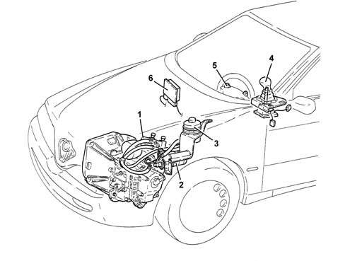
1, Hydraulic unit 2, Electric pump 3, Fluid reservoir 4, Gear selector lever 5, Speed selection buttons 6, Electronic control unit (CFC 202F)
This use of this system does not impose any changes to the clutch and internal gearbox mechanism.
Only the bellhousing requires modification to accommodate hydraulic actuators controlling the clutch and gear selection/shifts.
The clutch pedal has been eliminated and car take-off is achieved by means of the accelerator pedal alone.
The gearbox can work in two operating modes:
- semiautomatic, manual, when the driver requests gear changes by operating a lever on the central console or buttons on the steering wheel;
- automatic, known as 'CITY' where the system decides when to shift gear.
The advantages of this type of system are as follows:
- the driver no longer needs to operate the clutch pedal and gear lever but can still enjoy all the driving satisfaction that comes from direct control of the transmission;
- driving safety is increased because the control system prevents driver error and improper use of the transmission system;
- improved performance by conventional manual transmission components (reduced clutch wear).
VIEW OF ASSEMBLY
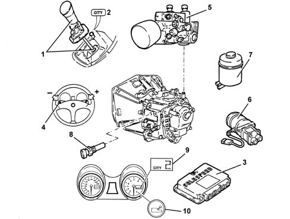
1, Gear selector lever 2, CITY button (automatic operation) 3, Electronic control unit (CFC 202F) 4, Gear selection buttons 5, Hydraulic unit 6, Pump 7, Fluid reservoir 8, Gearbox input rpm sensor 9, Gear position indicator 10, Fault warning light
DESCRIPTION
General characteristics
The electronic transmission control system allows:
- identification of driver reqeusts
- car operating conditions to be assessed by means of signals from sensors
- speed shifts to be managed by direct control of the clutch, gearbox and drive torque.
The control unit performs the task of:
- receiving signals from the various sensors;
- interfacing with the accelerator pedal (potentiometer and motorised throttle);
- interfacing with the injection control unit;
- controlling the hydraulic system;
- controlling an information display and buzzer.
The control unit uses the following signals for the management of these strategies:
- engine rpm (through the injection control unit)
- transmission input rpm sensor;
- clutch position sensor;
- selection position sensor;
- shift position sensor;
- accelerator pedal potentiometer/motorised throttle (via injection control unit);
- ignition key;
- driver's door switch;
- brake pedal switch;
- hydraulic unit fluid pressure;
- CAN line signal (coolant temperature , engine torque).
DIAGRAM OF INPUT/OUTPUT INFORMATION TO/FROM THE CONTROL UNIT
.
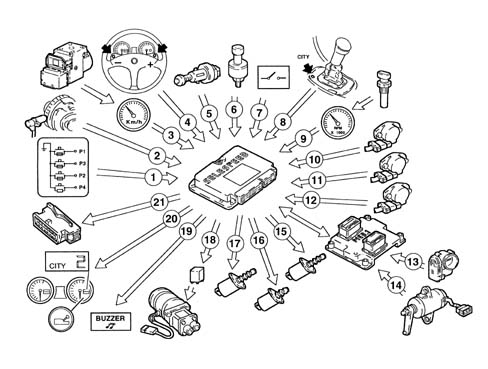
1, Gear selector lever switches 2, Engine rpm sensor 3, Car speed (via ABS control unit 4, Speed control selection buttons 5, Brake pedal switch 6, Oil pressure sensor 7, Driver's side door switch 8, CITY button 9, Gear input rpm sensor 10, Clutch position sensor 11, Speed selection position sensor 12, Shift position sensor 13, Built-in throttle body DVE (CAN line) 14, Accelerator pedal potentiometer (CAN line) 15, Proportional pressure solenoid (no. 2) 16, On-off solenoid (2) 17, Proportional flow solenoids 18, Electric pump 19, Buzzer 20, Control panel 21, Tester connection
OPERATING LOGICS
Turning on the system
When the ignition key is turned, the system tells the driver which speed is engaged via a display on the control panel. Once the warning light has gone out, it is ready to accept gear changes made using the gear selection lever.
Operation with engine off
For safety reasons, the gear can be changed using the selection lever only with the brake pedal pressed.
Engine starting
The engine may be started with a gear engaged or with the gearbox in neutral.
After start-up, the transmission switches automatically to neutral (indicated by the letter N on the display) and the system selects semiautomatic operation mode (manual).
The car can be push-started as follows:
- Turn the ignition key to the ON position
- Check the warning light has gone off (after 10 seconds);
- with the car running at a certain speed and the gearbox in neutral, shift up a gear (+) using the selection lever.
Take-off
Take-off is possible in 1 st , 2 nd and reverse according to specific clutch closure maps in the control unit.
For safety reasons, the above gears can be selected using the selection lever (steering wheel controls are not active until the car is running at 10 km/h) only with the brake pedal depressed or with the car at a standstill in the case of reverse.
When the driver depresses the accelerator pedal, the car takes off and the system closes the clutch progressively to move the car.
The driver may adjust the transmitted torque by operating the accelerator pedal.
When the accelerator pedal is released, the clutch opens and the car slows.
When engine rpm and clutch rpm are the same, the clutch is fully closed.
During take-off, the driver may request a gear change (it is advisable to release the accelerator pedal to avoid rapid interruption of the torque transmitted by the clutch).
Engine brake on descents
With the car on a descent, gear engaged, accelerator pedal released and car speed increasing over a set level, the clutch is automatically reclosed to provide the necessary engine braking effect.
If the driver operates the accelerator pedal during this stage, clutch closure obeys a map stored in the transmission control unit.
Slowing down
When the car is slowing down, e.g. after releasing the accelerator pedal, the system automatically re-opens the clutch to prevent the engine stalling.
The clutch re-opens at an engine speed computed on the basis of:
- engine rpm
- deceleration level (based on engine rpm)
- brake pedal pressed/not pressed.
When slowing down, if the speed is higher than 3 rd , the transmission automatically shifts down.
When the car stops, 1 st gear is engaged automatically.
Manual gear shifts - semiautomatic operation
Semiautomatic mode is set:
- automatically whenever the car is started;
- when the driver operates the gear lever or buttons while in CITY mode;
- when the driver presses the CITY button again while in CITY mode.
The system will accept an shift up or shift down request with the car in motion and clutch fully closed only if it is compatible with the current rpm range.
Normally a gear lever or button command (with car speed more than 10 km/h) will trigger only one upward or downward shift.
Once a gear shift request has been accepted, the shift is carried out according to an automatic sequence that reflects actual driver behaviour.
- engine torque reduction (by reducing advance/closing throttle) and simultaneous clutch opening;
- current gear disengaged, new gear selected and engaged. The engine (CUT OFF) is controlled in parallel, to increase engine rpm to the same level as clutch rpm following engagement of the new gear;
- modulated clutch closure and simultaneous gradual return to maximum possible torque delivery by the engine. When engine rpm and clutch rpm are the same, the clutch is fully closed.
Gear changes become faster with the accelerator pedal pressed through at least 60% of its travel and car speed greater than 5000 rpm.
A current gear shift request may be interrupted at any time by a new request by the driver, provided it is compatible with the current engine rpm range.
If the gear shift is not successful, it is repeated a second time from neutral. The gear above the one originally requested is then engaged.
City mode - automatic shifting
The speed is selected on the basis of a single control unit map on the basis of:
- accelerator pedal position
- vehicle speed.
- optimal gear (based on accelerator pedal position)
- brake pedal position.
If the accelerator pedal is released, the system does not shift up a speed in order to maintain an engine braking effect.
Gears are shifted in exactly the same way as during semiautomatic operation. The same transmission and engine control parameters are used.
Request to shift to neutral
This request takes precedence over all other gear shift requests.
With the engine off, hold down the brake pedal to engage neutral.
With the car in motion, neutral cannot be engaged when the car is travelling at more than a given speed (40 km/h)
Turning off the engine and deactivating the system
When the ignition key is turned off, the engine goes off but the Selespeed system stays active until the car comes to a complete standstill.
The hydraulic section is deactivated 2-4 seconds after the ignition is turned off and the gear display goes off immediately after. Only at this point is the Selespeed system deactivated.
The speed selected before the engine is turned off remains engaged.
When the engine is turned off with the gearbox in neutral, the buzzer attracts the driver's attention so that the car can be made safe by engaging 1 st gear or reverse.
In this case, turn the ignition key to MAR and engage 1 st or reverse with the brake pedal depressed.
When the buzzer sounds
For safety reasons, the system activates the buzzer when:
- reverse is engaged;
- the car is parked in neutral (the buzzer goes off when the ignition key is turned off).
- the clutch overheats during start-up;
- the car moves in the opposite direction to that of the gear engaged.
For safety reasons, with the car at a standstill, engine running and 1 st , 2 nd or reverse engaged, the system:
- activates the buzzer;
- automatically switches to neutral
when:
- the accelerator pedal and/or brake pedal is not operated for at least 50 seconds;
- the brake is depressed for longer than 10 minutes;
- the driver's door is opened and the accelerator pedal and brake pedal have not been operated for at least 1 second.
Recovery
Making the system safe
The control unit is able to identify potentially dangerous situations and make the system safe as a precautionary measure.
The system makes the system safe as follows:
- temporary suspension of current gear shifts in the case of:
- incorrect range selection (gear selection plan)
- clutch not sufficiently open
- gearbox input rpm too high;
- immediate engine stop command (via CAN line) with gear engaged, car taking-off/waiting to take off and detection of hydraulic clutch fault giving rise to fast clutch re-closure;
- control unit fault leading to:
- maintenance of pre-existing traction status until the car is about to stop;
- clutch opening command whe car is about to pull up.
Faulty operation
When the system detects faults in its components, its operating strategies are reconfigured.
The system adopts the following operating restrictions according to where the fault lies:
- gear lever faulty, the system switches to automatic CITY mode so the car can be driven to the first Authorised Service Outlet;
- clutch solenoid faulty, clutch operation locked with the car at a standstill;
- clutch sensor faulty, clutch control locked with the car at a standstill;
- shift solenoids faulty, gear shift acceptance locked
- selection solenoids faulty, gear shift acceptance blocked;
- shift and selection sensors faulty, gear change times extended and acceptance only of 1st , 2nd and reverse.
- engine, gearbox input and gearbox output rpm sensor faulty, and acceptance only of 1st , 2nd and reverse.
- oil pressure sensor faulty, open loop pump control
- gear selection lever switches faulty, switch to automatic mode.
Faults in the Selespeed system are indicated by a warning light (1) on the rev counter.
When the system comes on, the warning light should come with a fixed light for 4 seconds.
If the warning light continues to flash, a fault has been detected in the transmission. At the same time, the buzzer sounds intermittently for 4 seconds.
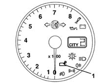
Applies to: engines: 2.5 V6, 3.2 V6, 1.9 JTD 8v , 2.4 JTD 10v; all production periods
Five/six speed transverse gaerbox with two shafts supported by conical bearings and an additional shaft for Reverse gear with twin idler gears with synchromesh.
The external controls have a twin cable.
Applies to: engines: 3.2 V6; all production periods; only with equipment: Smart gearbox
CONSTRUCTION FEATURES
INTRODUCTION
This electronically-controlled manual gearbox is known as a 'selespeed' unit.
A conventional manual transmission (single dry clutch plate and synchronised C.530.6 gearbox) is connected to an electronically-controlled hydraulic device that manages the clutch and gear shifts.
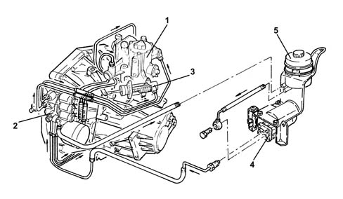
1 Electrohydraulic selection device 2 Hydraulic actuation unit Clutch control actuator 4 Electric pump 5. Fluid reservoir
This use of this system does not impose any changes to the clutch and internal gearbox mechanism.
Only the bellhousing requires modification to accommodate hydraulic actuators controlling the clutch and gear selection/shifts.
The clutch pedal has been eliminated and car take-off is achieved by means of the accelerator pedal alone.
The gearbox can work in two operating modes:
- semiautomatic, manual, when the driver requests gear changes by operating a lever on the central console or buttons on the steering wheel;
- automatic, known as 'CITY' where the system decides when to shift gear.
The advantages of this type of system are as follows:
- the driver no longer needs to operate the clutch pedal and gear lever but can still enjoy all the driving satisfaction that comes from direct control of the transmission;
- driving safety is increased because the control system prevents driver error and improper use of the transmission system;
- improved performance by conventional manual transmission components (reduced clutch wear).
VIEW OF ASSEMBLY
.
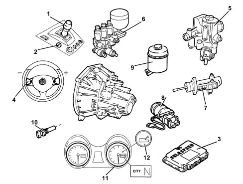
1 Gear selection lever 2 CITY button 3 Selespeed electronic control unit 4 Gear selection levers on steering wheel 5. Hydraulic selection device 6. Hydraulic actuation unit 7. Clutch control actuator 8. Electric pump 9. Fluid reservoir 10. Transmission input rpm sensor; 11. Gear selection display 12. Fault warning light
GENERAL CHARACTERISTICS
The electronic gearbox management allows:
- identification of driver reqeusts
- car operating conditions to be assessed by means of signals from sensors
- speed shifts to be managed by direct control of the clutch, gearbox and drive torque.
The control unit performs the task of:
- downloading signals from the various sensors;
- interfacing with the accelerator pedal (potentiometer and motorised throttle);
- interfacing with the injection control unit;
- controlling the hydraulic system;
- controlling an information display and buzzer.
The control unit uses the following signals for the management of these strategies:
- engine rpm (via the engine control unit),
- transmission input rpm sensor;
- clutch position sensor;
- gear selector position sensor,
- gear engagement position sensor
- accelerator pedal potentiometer/motorised throttle (via injection control unit),
- ignition key;
- driver's door switch,
- brake pedal switch,
- hydraulic unit fluid pressure;
- CAN line signal (coolant temperature , engine torque).
DIAGRAM OF INPUT/OUTPUT INFORMATION TO/FROM THE CONTROL UNIT
.
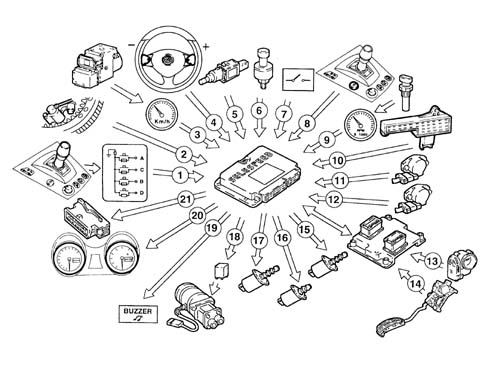
1 Gear selector lever switch 2 Engine rpm sensor (CAN line from engine management control unit) (2) 3 Vehicle speed (CAN line from ABS control unit) 4 Gear selection lever 5. Brake pedal switch 6. Oil pressure sensor 7. Driver's door switch 8. CITY button 9. Transmission input rpm sensor 10. Clutch position sensor 11. Gear selection position sensor 12. Gear engagement position sensor 13. DVE integral throttle body 14. Accelerator pedal with integral potentiometer (CAN line from engine control unit) 15. Proportional pressure solenoids (no. 2) 16. On-off solenoid (no. 1) 17. Proportional flow solenoid 18. Electric pump 19. Buzzer 20. Control panel 21. Diagnostic socket
USAGE OF THE SYSTEM
Operations to be carried out for starting/driving vehicle
START-UP STAGE
- Press the brake pedal
- start up the vehicle,
- engage the gear (1st, 2nd or Reverse) for setting off (with the brake pedal pressed), using the lever (when setting off the control on the steering wheel is not received).
DRIVING STAGE:
- remove your foot from the brake or accelerator pedal,
- then operate the controls (lever or the steering wheel)
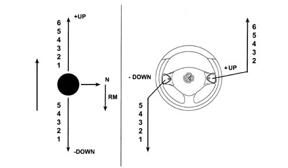
The CITY control is located on the tunnel, near the gear lever and allows the activation of the automatic gear change function.
Horn
A buzzer warns the driver of the following:
- system faults
- improper use (e.g. clutch overheating)
- car safety (e.g. doors open)
Incorrect or inconsistent driver operation
The Selespeed system prevents incorrect driver operation that could cause dangerous situations or be detrimental to the system.
The strategies are:
- the lever control takes priority if simultaneous requests are made using both the steering wheel lever and the tunnel lever;
- reverse gear cannot be engaged with the vehicle moving;
- a gear change request is not accepted with the car in motion if the request leads to rpm levels that are too high or too low;
- only 1st gear, 2nd gear and Reverse gear can be engaged with the vehicle stationary and the engine running.
The system has been designed taking into account the possibility that incorrect manoeuvres that could create dangerous situations could be requested allowing:
- the engine can only be started with a gear engaged if the vehicle is stationary, the accelerator pedal released and the brake pedal pressed (the system initially places the gearbox in automatic neutral and then enables the starting of the engine);
- with the car at a standstill (or virtually still), gear change requests are accepted only if the brake pedal is pressed (applies also to neutral). This prevents dangerous situations in case the lever/buttons on the steering wheel are accidentally operated by someone else or even by the driver;
- disabling of the steering wheel buttons at vehicle speeds of less than 15 km/h, thereby preventing possible driver error during parking manoeuvres;
- inhibition of the 'neutral' control above a preset speed, thereby preventing incorrect operation in critical situations, for example, downhill;
- CITY mode cancellation when the driver selects the gear directly using the lever/buttons, the driver's selection takes priority in this situation.
- automatic engagement of neutral and buzzer warning the driver for a limited period in the following cases: insufficient oil pressure for the management of the clutch, engine started and door open (starting with the door open is, however permissible because the driver's action on the brake or the accelerator is detected), engine started with gear engaged and no sign of operation of accelerator or brake for more than 5 secs., gear engaged and accelerator released and brake pedal pressed for at least 30 secs.;
- independent gear change if the driver insists outside of the rev range without changing gear.
SYSTEM OPERATION
Turning on the system
This takes place by turning the ignition key. The system informs the driver, through the instrument display, of the gear engaged and, after 1 - 2 secs., the system is capable of accepting new gear changes from the lever only.
With the engine switched off
Any gear whatsover can be engaged (including Reverse) and neutral can be engaged; these operations can only be carried out with the brake pedal depressed.
Engine starting
The system only enables the starting enablement relay if the gearbox is in neutral which the system automatically does when the brake pedal is pressed at the time of starting.
Vehicle take off / acceleration
Only 1st gear, 2nd gear or Reverse can be engaged for take off after starting. For safety reasons 1st and 2nd gears can only be engaged with the brake pedal pressed, whilst for Reverse gear in addition to this condition the vehicle must also be at a complete standstill.
When the brake pedal is released and the accelerator pedal operated, the system gradually closes the clutch and allows the vehicle to take off.
Modulating the position of the accelerator pedal allows the system to meter the torque transmitted by the clutch and consequently the acceleration of the vehicle.
When the system detects synchronism between the engine and clutch speeds, it closes the clutch completely
Vehicle slowing down
When the accelerator is released the system recognizes the intention to slow the vehicle down and automatically reopens the clutch to prevent the engine from stalling.
This reopening takes place at an engine speed that depends on the deceleration and the controls implemented by the driver (brake pressed or not).
When slowing down, if the speed engaged is higher than 3rd, the system automtically shifts down.
When the vehicle stops, 1st gear is engaged automatically.
Vehicle downhill
When the vehicle is driving downhill, a gear is engaged and the accelerator pedal is released, the speed increases, but as the preset speed in the control unit is reached, the clutch is automatically closed again to provide an engine braking effect; if the accelerator is pressed again, the driver resumes control of the vehicle.
Gear shift
With the vehicle moving and the clutch completely closed, the system is capable of accepting gear shift commandsif they are compatible with the rpm range.
Gear shifts can be implemented, as described previously, using the controls on the steering wheel or the joystick on the tunnel (if the lever and the steering wheel lever are operated simultaneously, the lever takes priority).
Once a gear shift request has been accepted, the shift is carried out according to an automatic sequence that reflects actual driver behaviour:
- engine torque reduction through a command from the Selespeed control system to the engine control system with the simultaneous opening of the clutch;
- release, selection and engagement of the new gear (parallel to this stage the engine is controlled so that the speed for the clutch after the engagement of the new gear can be reached);
- modulated clutch closure and simultaneous gradual return to maximum possible torque delivery by the engine. When the system detects synchronism between the engine and clutch speeds, the clutch is completely closed;
- a gear shift in progress may be interrupted at any time by a new request provided that it is compatible with the engine rpm range;
- the actuator control sequences during a gear shift are accompanied by waiting, allowing the repetition of the control if the outcome is not correct the first time, engaging a higher gear than requested.
Automatic gear shift (city mode)
The Selespeed system has an automatic operating mode, similar to the one on conventional automatic transmissions.
The selection of the speed to engage is made using a (single) map that correlates the position of the accelerator pedal, the vehicle speed and the optimum gear.
If the accelerator pedal is released, the system keeps the clutch as closed as possible to allow maximum engine braking.
Gears are shifted in exactly the same way as during semiautomatic operation. The same transmission and engine control parameters are used.
Request to shift to neutral
With the engine off the brake pedal must be pressed, as described previously.
With the vehicle moving, this request is not accepted above a preset vehicle speed.
Switching off the engine and the system
With the ignition key in the OFF position, the engine switches off and the Selespeed system keeps the gear selected engaged. The Selespeed system is only completely deactivated after having received a 'nil speed' input from the engine, gearbox input, gearbox output and after having saved the functional and diagnostic data in the control unit stable memory (all of this takes place in less than 2 seconds).
Information for the driver
The information for the driver concerning the operation of the Selespeed system is transmitted through a display located in the centre of the instrument that indicates the gear engaged or the CITY mode or the failure of the system;
a buzzer signals the improper use of the vehicle, or an unsafe situation or the failure of the system (e.g. improper use may be starting with the clutch overheating, an unsafe situation could be leaving the vehicle not in gear).
Push-starting
The car can be push-started as follows:
- turn the ignition key to the ON position
- check the warning light has gone off (after 10 seconds);
- with the car running at a certain speed and the gearbox in neutral, shift up a gear (+) using the selection lever.
Applies to: engines: 2.5 V6; all production periods; only with equipment: Automatic transmission
This automatic transmission allows the driver to shift gears manually by moving the selector lever into a special sector, Q-System.
The CAE electronic control unit manages automatic transmission operation by connection to:
- sensors/actuators fitted to the transmission for receiving information on operating conditions and operating the clutch and brakes;
- the injection/ignition control unit for the exchange of information on the engine;
- control panel for displaying operating conditions.
VIEW OF ASSEMBLY
.
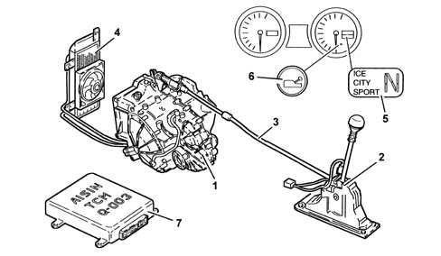
1, Automatic transmission 2, Gear selection lever 3, Gear control cable 4, Hydraulic circuit cooling radiator 5, Gear position indicator 6, System failure/oil temperature warning light 7, Electronic control unit
DESCRIPTION
General characteristics
The manual part of the automatic transmission consists of:
- a hydraulic torque converter with lock-up clutch that locks the converter at higher ratios;
- three epicyclic gear trains, two on the mainshaft and one on the layshaft;
- a band brake, three brakes and three clutches with multiple plates (hyraulically-operated) and three freewheels that lock the various gearing components together to produce four speeds and reverse;
- a parking lock in the form of a ratchet gear mechanism that locks the transmission when the control lever is in position P.
DIAGRAM OF INPUT/OUTPUT INFORMATION FROM THE CONTROL UNIT
.
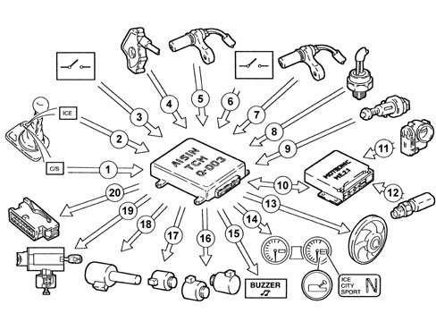
1, SPORT/CITY programme button 2, ICE programme button 3, Gear selection lever position switch 4, Selector lever position sensor 5, Mainshaft rpm sensor 6, Driver's door switch 7, Layshaft rpm sensor 8, Transmission fluid temperature sensor 9, Brake light switch 10, Injection-ignition control unit / CAN line 11, Thottle body integral with D.V.E. 12, Engine coolant temperature sensor 13, Transmission fluid cooling fan 14, Control panel 15, Buzzer control 16, Speed shift solenoids (S1 and S2) 17, Lock-up clutch solenoid (SL) 18, Pressure control solenoid (STH) 19, Ignition key lock release control 20, Tester connection
OPERATING STRATEGIES
Shifting gears
Gear shifts depend on:
- accelerator pedal position
- vehicle speed
- typical engine parameters (throttle opening angle and engine rpm);
- speed strategy selected by the driver (SPORT/CITY or ICE).
The CAE control unit sends a duty-cycle signal to speed shift solenoids S1 and S2.
This controls fluid flow to the brakes and clutch in order to achieve the various transmission ratios.
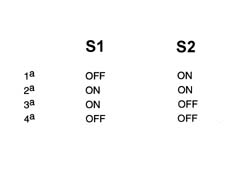
Torque converter lock-up
Lock-up clutch engagement to lock the torque converter depends on:
- the gear engaged;
- accelerator pedal position;
- vehicle speed;
- speed strategy selected by the driver (SPORT/CITY or ICE).
The CAE control unit sends a duty-cycle signal to the SL lock-up clutch solenoid, which cuts off fluid flow to the rear end of the clutch and triggers release.
The CAE control unit contains special torque converter lock programs for SPORT and CITY gear strategies, while the torque converter cannot be locked while in ICE mode.
The torque converter is not locked under the following conditions:
- system in recovery mode (fault signal from one component);
- with brake pedal pressed and gear input speed below a given threshold;
- with throttle closed (accelerator pedal not pressed), car speed lower than 125 km/h and selection lever in D position;
- with engine coolant temperature lower than a threshold value stored in the control unit.
Implementing gear strategies
The CAE control unit can instruct the automatic transmission to adopt three strategies:
- CITY, for the greatest driving comfort and optimal fuel consumption;
- SPORT, for top performance;
- ICE, to increase driving safety when grip is poor.
The control unit also uses an automatic WARM-UP program to help the engine warm up.
The system sets itself to CITY mode whenever the car is started.
When the SPORT/CITY button is pressed, the system switches from CITY to SPORT mode and vice versa.
When the ICE button is operated, the system uses the IICE strategy and cuts out the other two strategies. When the ICE button is pressed again, the system returns to the strategy selected previously.
The system can switch between one strategy and another at any time while driving.
The selected strategy is displayed beside the selector ever position on an instrument panel display.
Typical curves governing transition between the four lock-up clutch ratios (while changing up or down) are then expressed on the basis of percentage throttle opening and car speed.
Operation in city mode
The CAE control unit selects CITY mode whenever the engine is started.
This mode ensures a very smooth drive designed for comfort and running economy.
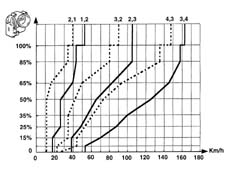
Operation in sport mode
The CAE control unit engages SPORT mode when the relevant button is operated.
This operating strategy exploits available power to the full to achieve maximum car performance. Throttle opening remains the same, but upward gear shifts automatically take place at a higher rpm.
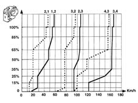
SPORT mode is shut off:
- by pressing the ICE button again;
- by pressing the ICE button;
- when the car is in recovery mode.
Operation in ice mode
The CAE control unit switches to ICE mode when the ICE button is operated with the gear selection lever set to D.
This strategy increases driving safety on roads with low grip and makes it easier to take off following start-up.
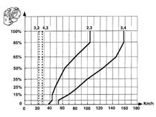
ICE strategy is shut off:
- by pressing the ICE button again;
- when gear selection lever is set to a position other than D;
- by turning off the engine;
- when speed exceeds 45 km/h;
- when transmission fluid temperature exceeds a threshold;
- when the car is in recovery mode.
Operation in automatic warm-up program
This program is activated automatically by the CAE control unit. It helps the car warm up faster by raising gear shift points.
It is activated after start-up if engine coolant temperature is below a threshold stored in the control unit and remains activated up to 55° ?.
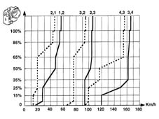
Hydraulic pressure changes
Hydraulic system pressure is regulated by the CAE control unit to achieve the following functions:
- line pressure increase when cold;
- line pressure reduction during transition from N - R;
- control pressure modulation.
Line pressure increase when cold
With:
- gears selection lever in N position;
- transmission fluid temperature lower than 10 ° C;
- car speed lower than 7 km/h,
The CAE control unit sends a 5 second signal to the STH solenoid to increase line presure and thus reduce time required to engage 1 st speed or reverse.
Line pressure reduction during transition
N-R
When the gear selection lever is shifted from N to R position, the CAE control unit sends a signal to the STH solenoid to reduce line pressure in order to reduce jerkiness due to engagement of reverse.
Control pressure modulation
The CAE control unit increases solenoid control pressure according to throttle opening and car speed.
Controlling gear shift times
The CAE control unit compares the ratios between input and output speeds (supplied by mainshaft and layshaft rpm sensors respectively) with stored transmission ratios for the various speeds in order to assess gear shift times.
Controlling gear shifts
Automatic transmission speed engagement gives rise to jerks due to the sudden transmission ratio changes.
This effect is more marked during engagement of 1 st gear and reverse because higher transmission ratios are possible.
To reduce this stress and improve driving comfort, the automatic transmission adopts the following strategies:
- 1st speed and reverse are engaged at reduced drive torque (garage function);
- squat controlled during transition betwen N - D;
- line pressure reduced during transition between N - R.
1 st speed or reverse engagement (garage function)
When the gear selection lever is shifted as follows:
- from N (or P or R) to D
- from any position to R
The CAE control unit instructs the injection - ignition control unit to reduce drive torque and thus reduce the jerkiness experienced while shifting to 1 st speed or reverse.
Transition from n - d with control of squat
When the gear selection lever is shifted from N to D position, the CAE control unit simultaneously engages 3 rd gear before moving on to 1 st gear.
In this way, the jerkiness due to engagement of 1 st gear is reduced together with consequent squat.
This function cuts in only when the following conditions occur simultaneously:
- brake pedal pressed;
- throttle closed;
- car speed lower than 7 km/h;
- CITY or SPORT mode in use.
Transition from n - r with reduction in line pressure
When the gear selection lever is shifted from N to R position, the CAE control unit instructs the STH solenoid to reduce line pressure in order to reduce the jerkiness experienced during engagement of reverse.
Safety functions
Protection against excess rpm
The CAE control unit prevents the engagement of lower ratios (even when the gear selection lever is moved by hand) until car speed has dropped below a given threshold in order to prevent dangerous engine racing.
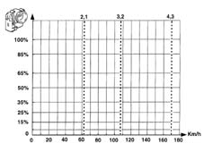
Shift-lock
The speed selection lever can be moved from position P, with the ignition key turned on, only with the brake pedal depressed (Shift-lock safety function).
In case of emergencies (faults, flat battery etc.), teh lever can only be moved from P position by pressing a manual button beneath the gear lever boot and simultaneously shifting the lever from P to the required position.
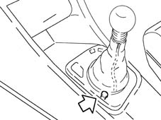
Key-lock
When turned off, the ignition key may be removed only if the gear selection lever is in P position (Key-lock).
In case of emergency ( faults, flat battery etc.), the ignition key may be removed even when the gear selection lever is not set to P. To do this, press the release device located in the trim near the ignition by hand and simultaneously remove the key.
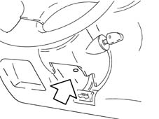
Buzzer
This is built into the control panel and comes on for 18 seconds when:
- the driver's door is open and/or engine status and gear selection lever position is other than P
- R is engaged.
Fault indication
Fault warning light
Automatic transmission faults are indicated by warning light (1) on the control panel as follows:
- fixed light, maximum automatic transmission fluid temperature;
- flashing light, automatic transmission failure.
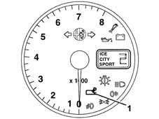
When the ignition key is turned to MAR position, the warning light should come on and then go off after about 4 seconds.
If the warning light stays on or comes on while the car is in motion, the automatic transmission is faulty.
Warning light comes on with fixed light
If the warning light comes on with a fixed light during motion, the transmission fluid has reached maximum temperature.
The control unit runs an emergency program under these circumstances.
Warning light flashing
If the warning light flashes during motion, the automatic transmission is faulty.
The control unit runs an emergency program under these circumstances.
If the fault persists (warning light flashing), select the gear manually as if driving a manual car and remember that the only two speeds available are 2 nd and 4 th .
This means that the gear will always change to 2 nd whether 1 st or 2 nd is selected; 4 th will always be selected whther 3 rd or 4 th is selected.
Reverse may be engaged.
Applies to: engines: 2.4 JTD 20v; all production periods
GENERAL CHARACTERISTICS
F40 Gearbox
The F40 gearbox assembly with three transmission shafts is illustrated in the diagram.
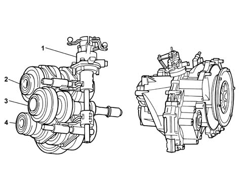
1. Gear engagement assembly 2. Layshaft C 3. Main shaft A 4. Layshaft B
The gearbox configuration is transverse with three shafts: one main shaft (A) and two layshafts (B and C).
There are five fixed gears on the main shaft A which transmit power to the gears for 1st, 2nd, 3rd, 4th, 5th, 6th and Reverse speeds on the two layshafts (B and C) which are permanently meshed.
The two layshafts (B and C) both have a pinion which is permanently meshed with the differential ring gear.
The layshaft (B) contains 1st and 2nd gears and 5th and 6th gears, whilst layshaft (C) has 3rd and 4th speeds and reverse gear.
The gears and drive chains inside the gearbox are lubricated dynamically by channeling oil flows through holes in the casings and on the mainshaft and layshaft and also through additional plastic channels; all this allows improved torque transmission efficiency and more effective wear prevention.
The clutch control is hydraulic with a coaxial CSC system coaxial on the mainshaft inside the gearbox.
This system has the following advantages:
- a clutch plate wear recovery device that allows the force on the clutch pedal to be kept constant during the working life of the vehicle.
- improved acoustic comfort
- reduced shift effort
- no vibrations / lever shuddering
Gearbox in neutral
The diagram below illustrates the gearbox when no gear is engaged.
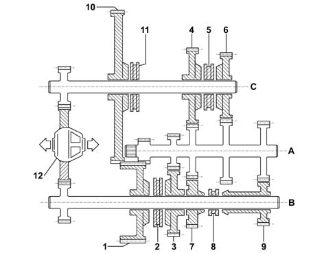
1. 1st speed gear 2. 1st and 2nd speed synchronizer 3. 2nd speed gear 4. 3rd speed gear 5. 3rd and 4th speed synchronizer 6. 4th speed gear 7. 5th speed gear 8. 5th and 6th speed synchronizer 9. 6th speed gear 10. Reverse gear 11. Reverse gear synchronizer 12. Differential A. Main shaft B. Layshaft C. Layshaft
TRANSMISSION OF DRIVE IN DIFFERENT GEARS
First speed
The power enters the gearbox via the main shaft (A) and is transmitted, via the drive gear, to the driven gear for 1st speed on the layshaft (B).
When 1st speed is engaged, the synchronizer (2) joins the driven gear (1) with the layshaft (B) and the power is transmitted to the differential (12) thereby completing the kinematic chain.
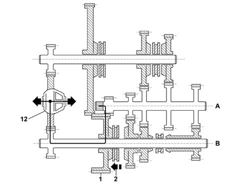
A. Main shaft B. Layshaft 1. 1st speed gear 2. Synchronizer 12. Differential
Second speed
The power enters the gearbox via the main shaft (A) and is transmitted, via the drive gear, to the driven gear (3) for 2nd speed on the layshaft (B).
When 2nd speed is engaged, the synchronizer (2) joins the driven gear (3) to the layshaft (B) and the power is transmitted to the differential (12) thereby completing the kinematic chain.
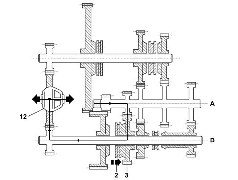
A. Main shaft B. Layshaft 2. Synchronizer 3. 2nd speed gear 12. Differential
Third speed
The power enters the gearbox via the main shaft (A) and is transmitted, via the fixed drive gear, to the driven gear (4) for 3rd speed on the layshaft (C).
When 3rd speed is engaged, the synchronizer (5) joins the driven gear (4) to the layshaft (C) and the power is transmitted to the differential (12) thereby completing the kinematic chain.
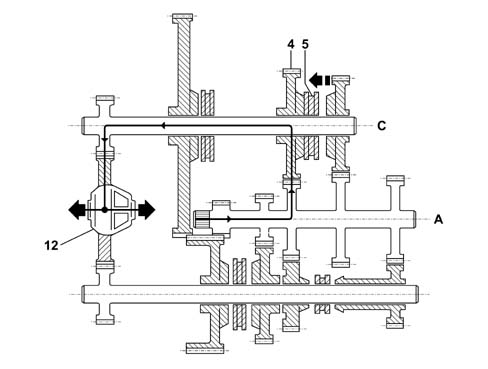
A. Main shaft C. Layshaft 4 3rd speed gear 5. Synchronizer 12. Differential
Fourth speed
The power enters the gearbox via the main shaft (A) and is transmitted, via the fixed drive gear, to the driven gear (6) for 4th speed on the layshaft (C).
When 4th speed is engaged, the synchronizer (5) joins the driven gear (6) to the layshaft (C) and the power is transmitted to the differential (12) thereby completing the kinematic chain.
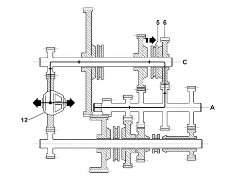
A. Main shaft C. Layshaft 5. Synchronizer 6. 4th speed gear 12. Differential
Fifth speed
The power enters the gearbox via the main shaft (A) and is transmitted, via the fixed drive gear, to the driven gear (6) for 5th speed on the layshaft (B).
When 5th speed is engaged, the synchronizer (8) joins the driven gear (7) to the layshaft (B) and the power is transmitted to the differential (12) thereby completing the kinematic chain.
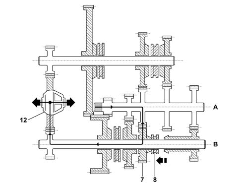
A. Main shaft B. Layshaft 7. 5th speed gear 8. Synchronizer 12. Differential
Sixth speed
The power enters the gearbox via the main shaft (A) and is transmitted, via the fixed drive gear, to the driven gear (9) for 6th speed on the layshaft (B).
When 6th speed is engaged, the synchronizer (8) joins the driven gear (9) to the layshaft (B) and the power is transmitted to the differential (12) thereby completing the kinematic chain.
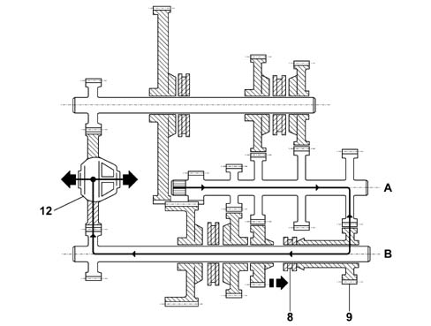
A. Main shaft B. Layshaft 8. Synchronizer 9. 6th speed gear 12. Differential
Reverse
The power enters the gearbox via the main shaft (A) and is transmitted to the gear (1) for 1st speed on the layshaft (B).
This gear remains free on the shaft and is only designed as an idler for the power between the main shaft (A) and the driven gear (10) for reverse fitted on the layshaft (C).
When reverse is engaged, the synchronizer (11) joins reverse gear (10) with the layshaft (C) and the power is transmitted to the differential (12) thereby completing the kinematic chain.
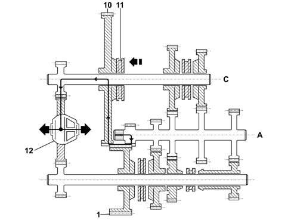
A. Main shaft C. Layshaft 1. 1st speed gear (neutral on the shaft) 10. Reverse gear 11. Reverse gear synchronizer 12. Differential
MANUAL GEARBOX EXTERNAL CONTROLS
The external linkage ensures slick, noiseless manoeuvres.
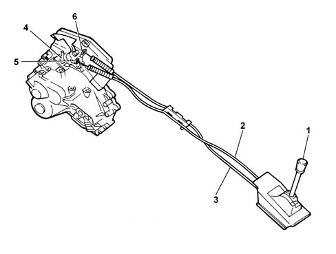
1. Transmission control lever 2. Gear engagement cable 3. Gear selector cable 4. Support for gear selector and engagement cable 5. Gear engagement lever 6. Gear selector lever
CLUTCH CONTROL
COAXIAL HYDRAULIC OPERATION (CSC)
The (CSC) control system consists of an anular actuator cylinder located in the bell housing which controls the clutch, operating coaxially to the main shaft.
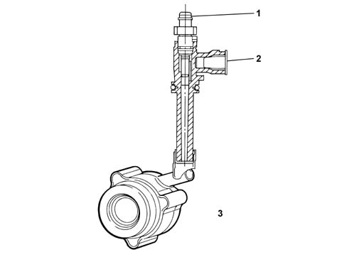
1. Air bleed plug 2. Pressurized oil inlet 3. Coaxial hydraulic operation assembly